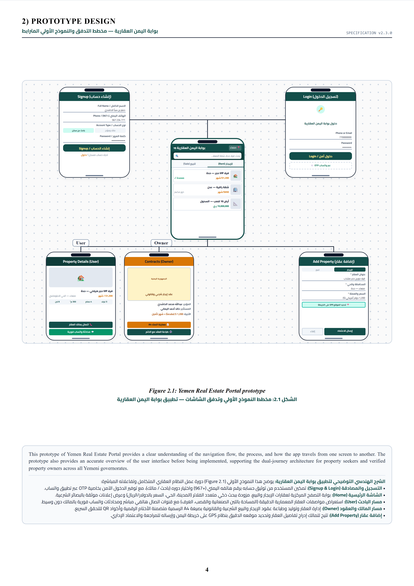
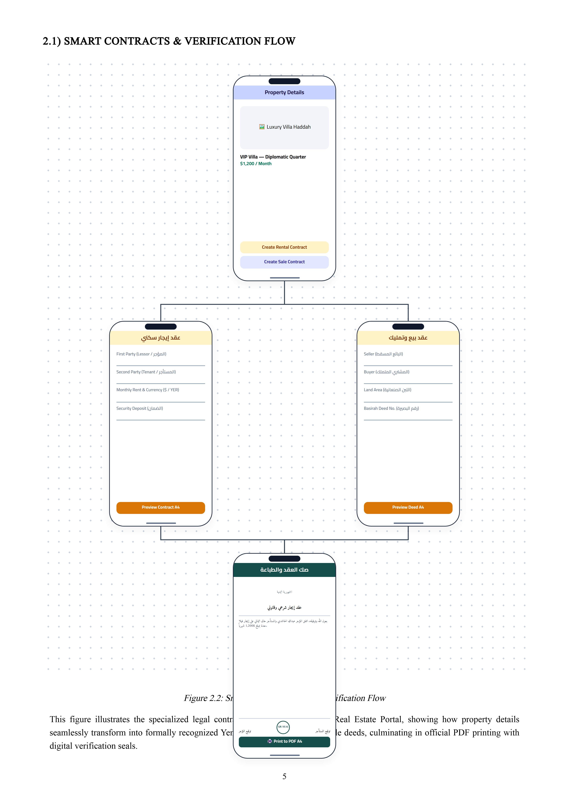

وثيقة التصميم الهندسي للنموذج الأولي ومخطط الشاشات
Prototype Design & User Flow Architecture
دراسة وتوصيف كافة الشاشات الـ 18 ومسارات التنقل لمشروع بوابة اليمن العقارية
2) PROTOTYPE DESIGN — YEMEN REAL ESTATE PORTAL

📌 الشرح التفصيلي لمخطط وتجربة مستخدم تطبيق بوابة اليمن العقارية (Figure 2.1 Analysis):
يوضح هذا المخطط الهيكلي التفاعلي (Figure 2.1) المسار الوظيفي المترابط لتطبيق بوابة اليمن العقارية (Yemen Real Estate Portal)، وكيفية تنقل البيانات والعمليات بين مختلف شاشات النظام بما يلائم خصوصية البيئة العقارية اليمنية:
- مسار المصادقة والتسجيل (Signup & Login): يتيح تسجيل الباحثين والملاك والوسطاء العقاريين المعتمدين باستخدام أرقام الهواتف اليمنية (مفتاح الدولي +967 لشبكات يمن موبايل، يو، سبأفون) مع التحقق الفوري برمز OTP عبر واتساب لتسريع الدخول.
- الشاشة المركزية (Home Hub): مركز استعراض عقارات الجمهورية اليمنية مع محدد المحافظة (صنعاء، عدن، تعز، حضرموت، إب...)، التبديل الفوري بين عقارات الإيجار والبيع، وفرز العقارات المعمدة ذات البصائر الشرعية الموثقة.
- مسار الباحث عن عقار (User Path - تفاصيل العقار): يستعرض كرت العقار المفصل متضمناً صور الواجهات الحجرية (حجر هيلاني/مشذب)، الأسعار بالعملات المعتمدة (USD/YER/SAR)، والمساحة باللبن الصنعانية والقصب والمتر المربع، مع أزرار اتصال هاتفي مباشر ومحادثة واتساب سريعة للتفاوض.
- مسار المالك والمكتب (Owner Path - إدارة وصياغة العقود): يمنح مالك العقار صلاحية توليد العقود الشرعية المؤتمتة لعقاراته، ومراجعة التراخيص العقارية وتقييمات العملاء.
- مسار إضافة العقار وتحديد الموقع (Add Property & GPS): معالج إلكتروني متكامل يتيح للمالك إدخال مواصفات العقار، ورفع وثائق الملكية (صك البصيرة الشرعية)، وتحديد الموقع الجغرافي الدقيق على خريطة اليمن عبر الـ GPS قبل إرسال الطلب للاعتماد الإداري.
2.1) SMART CONTRACTS & VERIFICATION FLOW

📑 شرح منظومة صياغة وتوثيق العقود الإلكترونية اليمنية (Figure 2.2 Analysis):
تنفرد بوابة اليمن العقارية بمنظومة عقود إلكترونية ذكية تربط مباشرة بين تفاصيل العقار وصك التعاقد الشرعي والقانوني:
- عقود الإيجار السكنية والتجارية (Rental Contracts): صياغة البنود وفق قانون تنظيم العلاقة بين المؤجر والمستأجر والقانون المدني اليمني، مع تحديد الأجرة الشهرية بالدولار أو الريال، مبلغ التأمين/الضمان، وشروط الخدمات والصيانة.
- عقود البيع والتمليك (Sale & Deed Contracts): توثيق إسقاط ملكية البائع ونقلها للمشتري، مع تدوين مساحة الأرض باللبن الصنعانية، وأرقام البصائر وسجلات المحاكم وتعميد الأمين الشرعي.
- المعاينة والطباعة الرسمية (PDF & Seal Verification): توليد ورقة العقد الرسمية A4 مع الختم الرقمي وكود الاستجابة السريعة (QR Code) لتسهيل الطباعة الورقية المباشرة أو الحفظ والمشاركة بصيغة PDF عالية الدقة.
3) DETAILED SPECIFICATIONS FOR ALL 18 SYSTEM SCREENS
المرحلة الأولى: الدخول والتوثيق (Onboarding & Authentication)
الغرض الوظيفي: تهيئة التطبيق، فحص جلسة المستخدم المحلية (Session Token)، والترحيب بالهوية البصرية الرسمية لمنصة اليمن العقارية.
الغرض الوظيفي: إنشاء حساب مستخدم جديد مع تحديد نوع العضوية (باحث عن عقار / مالك ومكتب عقاري) وربطه برقم الهاتف اليمني.
الغرض الوظيفي: مصادقة المستخدمين وإتاحة الدخول السريع عبر رمز التحقق المباشر (OTP) للواتساب أو البريد.
المرحلة الثانية: الاستكشاف، البحث، والخريطة (Discovery, Search & Map)
الغرض الوظيفي: الشاشة المركزية في التطبيق؛ تتيح البحث الفوري، فرز الصفقات (إيجار/بيع)، تصفح المحافظات، واستعراض أحدث العقارات المعمدة.
الغرض الوظيفي: إظهار العقارات المطابقة لشروط البحث والفرز وفق نوع العقار (شقة، فيلا، أرض، عمارة)، السعر، والمديريات.
الغرض الوظيفي: استعراض الملف الفني الكامل للعقار: الصور، السعر بالعملة، المساحة باللبنة والمتر، شارة التعميد، والتواصل المباشر مع المالك أو صياغة العقد.
الغرض الوظيفي: تصفح العقارات جغرافياً عبر محرك التجميع العنقودي (Spatial Clustering) لكافة المحافظات مع نافذة سفلية منبثقة لمعاينة العقار المختار.
الغرض الوظيفي: حفظ وتتبع العقارات التي يفضلها المستخدم للرجوع إليها سريعاً أو مقارنة أسعارها ومواقعها.
المرحلة الثالثة: التواصل ومنظومة العقود الذكية (Contracts & Communications)
الغرض الوظيفي: التحقق من ترخيص المكتب العقاري وتقييمات العملاء واستعراض كافة العقارات الأخرى المعلنة من قبله.
الغرض الوظيفي: إدخال وتعديل بيانات وبنود عقد الإيجار الرسمي: بيانات المؤجر والمستأجر، الأجرة، الضمان، والالتزامات وفق القانون اليمني.
الغرض الوظيفي: توثيق نقل ملكية العقار والبصيرة الشرعية وتدوين المساحة باللبنة الصنعانية والقصبة وإجمالي الثمن وشروط الإبراء.
الغرض الوظيفي: محاكاة ومعاينة ورقة العقد الرسمية المجهزة للطباعة بصيغة A4 مع ترويسة الجمهورية اليمنية، البنود القانونية، الختم الرقمي، وكود التحقق QR.
الغرض الوظيفي: محادثة كتابية مباشرة بين الباحث ومالك العقار للتفاوض حول السعر أو حجز موعد للمعاينة الميدانية مع اقتباس كرت العقار المعني.
المرحلة الرابعة: إضافة العقارات، المراجعة، والإدارة (Publishing & Administration)
الغرض الوظيفي: نموذج شامل لإدخال تفاصيل الإعلان العقاري ورفع صور العقار وبصائر الملكية وتحديد الموقع على الخريطة قبل إرساله للمراجعة.
الغرض الوظيفي: ضبط الموقع الجغرافي الدقيق للعقار عبر علامة التنشين (GPS Crosshair) وتسجيل إحداثيات خطوط الطول والعرض بالأرقام.
الغرض الوظيفي: استعراض عقارات المستخدم المنشورة، العقود المبرمة، تبديل اللغة (العربية/الإنجليزية)، والدخول للوحة الإدارة للمصرح لهم.
الغرض الوظيفي: مركز القيادة والتحكم العام؛ يعرض مؤشرات الأداء الحية، العقارات النشطة، الطلبات المعلقة، وإحصائيات التوثيق العقاري.
الغرض الوظيفي: فحص الإعلانات المقدمة من الملاك والوسطاء قبل ظهورها للعامة، واتخاذ قرار فوري بالاعتماد والنشر أو الرفض مع ذكر السبب.
4) NAVIGATION TRACEABILITY MATRIX
| # | الشاشة (Screen Name) | مصدر الانتقال (From) | الوجهة المستهدفة (To Destination) |
|---|---|---|---|
| 1 | البداية (Splash) | تشغيل التطبيق | الرئيسية [4] أو تسجيل الحساب [2] أو الدخول [3] |
| 2 | إنشاء حساب (Signup) | البداية [1] أو الدخول [3] | الشاشة الرئيسية [4] |
| 3 | تسجيل الدخول (Login) | البداية [1] أو إنشاء الحساب [2] | الشاشة الرئيسية [4] |
| 4 | الرئيسية (Home) | المصادقة أو شريط التنقل السفلي | البحث [5]، التفاصيل [6]، الخريطة [10]، الإضافة [7] |
| 5 | نتائج البحث (Search) | الرئيسية [4] عبر حقل البحث | تفاصيل العقار [6] |
| 6 | تفاصيل العقار (Details) | الرئيسية [4]، البحث [5]، الخريطة [10] | ملف المالك [11]، عقد الإيجار [12]، عقد البيع [13] |
| 7 | إضافة عقار (Add Property) | زر "+" في شريط التنقل السفلي | تحديد الموقع GPS [8]، إرسال للاعتماد [18] |
| 8 | تحديد الموقع (Pick Map) | شاشة إضافة عقار [7] | تأكيد الإحداثيات والرجوع لشاشة الإضافة [7] |
| 9 | المفضلة (Favorites) | شريط التنقل في أي شاشة | تفاصيل العقار [6] |
| 10 | خريطة اليمن (Map) | شريط التنقل السفلي في أي شاشة | تفاصيل العقار المختار في الكرت السفلي [6] |
| 11 | ملف المالك (Owner) | تفاصيل العقار [6] | المحادثة المباشرة [15]، تفاصيل عقارات المالك [6] |
| 12 | عقد إيجار (Rent) | تفاصيل العقار المخصص للإيجار [6] | معاينة صك العقد والطباعة [14] |
| 13 | عقد بيع (Sale) | تفاصيل العقار المخصص للبيع [6] | معاينة صك البيع والطباعة [14] |
| 14 | معاينة العقد (Preview) | إنشاء عقد الإيجار [12] أو البيع [13] | نافذة الطباعة A4 وتصدير PDF أو واتساب |
| 15 | المحادثات (Chat) | تفاصيل العقار [6] أو ملف المالك [11] | تفاصيل العقار المقتبس [6] |
| 16 | الملف الشخصي (Profile) | شريط التنقل السفلي في أي شاشة | لوحة الإدارة [17] أو تسجيل الخروج [3] |
| 17 | لوحة الإدارة (Dashboard) | الملف الشخصي [16] للمشرفين | مراجعة طلبات النشر [18] |
| 18 | مراجعة النشر (Approvals) | لوحة المدير [17] أو بعد إضافة عقار [7] | اعتماد ونشر العقار في الرئيسية [4] والخريطة [10] |